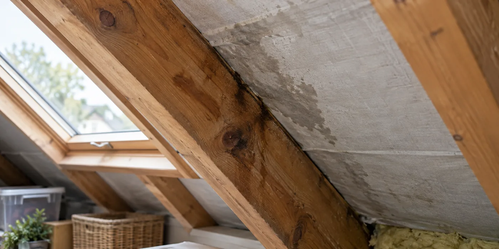

Beschrijf het patroon
Noteer waar je vocht ziet en wanneer het verschijnt. Komt het terug na regen, verspreidt het zich over een groot vlak of ontstaat het naast een doorvoer? Vertel ook of de zolder wordt verwarmd en of er recent een slaapkamer of badkamer is gemaakt. Dit zijn vragen voor de inspectie; geen enkel patroon geeft op zichzelf voldoende zekerheid over de oorzaak.
Laat het onderdak mee onderzoeken
De eigenschappen van het onderdak zijn belangrijk wanneer je van binnenuit wilt isoleren. Buildwise wijst op de specifieke beoordeling die een dampdicht onderdak vraagt. Laat de dakopbouw daarom beschrijven vóór de keuze van isolatie en dampremming. Een onbekende bestaande folie zomaar inbouwen kan het onderzoek later moeilijker maken.

Plan herstel en isolatie in de juiste volgorde
Vraag welke delen eerst moeten drogen of hersteld worden en hoe de nieuwe opbouw aansluit op ramen en muren. Leg vast welke aannemer de vochtproblematiek opvolgt. Bewaar foto’s van de open constructie, want na afwerking zijn veel aansluitingen niet meer zichtbaar. Bespreek ook welke observaties na de werken een nieuwe controle vereisen.
Laat je observaties samen beoordelen
Stuur niet alleen de opvallendste foto, maar maak een korte tijdlijn. Noteer eerdere herstellingen en wanneer isolatie, ramen of binnenafwerking veranderden. Vraag de specialist welke bijkomende inspectie nodig is en welke delen daarvoor toegankelijk moeten zijn. Dat helpt om onderzoek af te bakenen zonder zelf een diagnose te stellen. Laat ook bepalen wanneer vervolgcontrole zinvol is: een droge dag na herstel zegt niet alles over de werking bij andere weersomstandigheden.
Een lek en condensatie vragen een andere onderzoeksroute
Bij een lek komt water via een tekortkoming in de buitenopbouw binnen. Condensatie houdt verband met vochtige lucht en temperatuurverschillen. Die begrippen helpen om het onderzoek te bespreken, maar zijn geen diagnose voor jouw zolder. Een specialist moet kunnen beoordelen of meerdere oorzaken tegelijk spelen. Vertel daarom niet alleen waar de grootste vlek zit. Vermeld ook andere vochtsporen, eerdere herstellingen en veranderingen in het gebruik van de ruimte. Vraag welke vaststellingen zeker zijn en welke nog onderzoek vragen. Zo voorkom je dat een eerste vermoeden ongemerkt als uitgangspunt voor een volledige renovatie wordt gebruikt.
Waarom de binnenruimte onderdeel van de vraag is
Een onverwarmde opslagzolder en een ingerichte slaapruimte zijn niet dezelfde gebruikssituatie. Het gebruik van de ruimte kan veranderen welke binnenomstandigheden bij het ontwerp beoordeeld moeten worden. Noteer wanneer de ruimte ingericht, verwarmd of anders geventileerd werd. Vraag de specialist hoe de bestaande daklagen zich verhouden tot dat gebruik. Buildwise bespreekt voorwaarden voor isoleren onder een dampdicht onderdak; het is dus geen eenvoudige ja-of-nee-vraag op basis van één zichtbare folie. Laat beoordelen welke opbouw bij de bestaande materialen past. Veronderstel niet dat de oplossing van een buur dezelfde werking zal hebben.
Wat moet je weten vóór je alles dichtmaakt?
Vraag welke daklagen geïdentificeerd zijn en waar onzekerheid blijft. Een materiaal dat er op het eerste gezicht bekend uitziet, hoeft nog geen bevestigde eigenschap te hebben. Bespreek ook hoe de gekozen binnenopbouw aansluit rond dakramen, balken en muren. Juist op die plaatsen moet het ontwerp uitvoerbaar zijn. Fotografeer de open situatie en laat belangrijke details benoemen. Bewaar geen losse foto zonder locatie: een aanduiding van dakvlak of kamer maakt het beeld later bruikbaar. Het doel is niet zelf een technisch detail te ontwerpen, maar het uitgevoerde ontwerp terugvindbaar te houden.
Hoe bespreek je de opvolging na herstel?
Vraag welke periode en omstandigheden zinvol zijn om de situatie opnieuw te bekijken. Een droge dag onmiddellijk na de werken is niet automatisch een volledige beoordeling. Spreek af welke veranderingen je moet melden en wie vervolgvragen ontvangt. Houd je observaties vergelijkbaar: dezelfde plek, datum en omschrijving zijn nuttiger dan telkens een andere close-up. Pas tijdens die opvolging niet zelf meerdere dingen tegelijk aan zonder overleg. Als gebruik, ventilatie en dakopbouw gelijktijdig veranderen, kan het moeilijker worden om een nieuwe waarneming te begrijpen. Laat de specialist aangeven welke opvolging bij zijn vaststellingen past.
Een dossier voor een tweede advies
Wanneer een probleem terugkeert, helpt een compacte tijdlijn een tweede specialist. Zet het eerste vochtmoment, eerdere onderzoeken en uitgevoerde herstellingen achter elkaar. Voeg de beschikbare dakopbouw en relevante foto’s toe. Houd waarnemingen gescheiden van conclusies: schrijf bijvoorbeeld dat de plek na slagregen nat werd, niet dat een bepaald materiaal daarom definitief de oorzaak is. Vraag bij een tweede advies welk deel aanvullend onderzoek vergt en wat al voldoende bekend is. Daarmee wordt het geen wedstrijd tussen twee meningen, maar een vergelijking van vaststellingen en de voorgestelde onderzoeksroute.
Praktische vergelijking
| Informatie | Wat noteer je? | Waarom nuttig? |
|---|---|---|
| Weer en tijd | Regen, kou en terugkeer | Patroon voor de inspectie |
| Gebruik | Verwarming en inrichting | Binnenomstandigheden |
| Daklagen | Wat is geïdentificeerd? | Basis voor de nieuwe opbouw |
| Herstellingen | Wat werd veranderd? | Opvolging en tweede advies |
Een praktisch voorbeeld
Een zolder wordt ingericht als slaapkamer en vertoont daarna vocht. Dat is reden om het gewijzigde gebruik en de dakopbouw samen te laten onderzoeken, niet om meteen de buitenbedekking als enige oorzaak aan te wijzen.
Illustratief scenario, geen klantcase.
Neem dit mee naar je gesprek
- Moment en locatie van het vocht
- Gebruik en verwarming van de zolder
- Bestaande daklagen laten identificeren
- Foto’s vóór het sluiten van de opbouw
Veelgestelde vraag
Kan ik gewoon extra isolatie plaatsen?
Laat eerst de oorzaak van het vocht en de bestaande opbouw beoordelen. De juiste oplossing hangt daarvan af.
Bron en achtergrond
Buildwise: officiële of technische achtergrond bij dit onderwerp ↗
Geraadpleegd op 13 oktober 2026. De praktische checklist en het voorbeeld zijn redactionele uitwerkingen. Fabrikantinformatie geldt voor de beschreven producten; ze is geen algemene garantie voor andere systemen.
Wat betekent dit voor jouw woning?
Gebruik de calculator voor een eerste indicatie. Een vakman beoordeelt jouw situatie en bevestigt de uitvoering en definitieve prijs.
Bekijk de dakwerkencalculator →